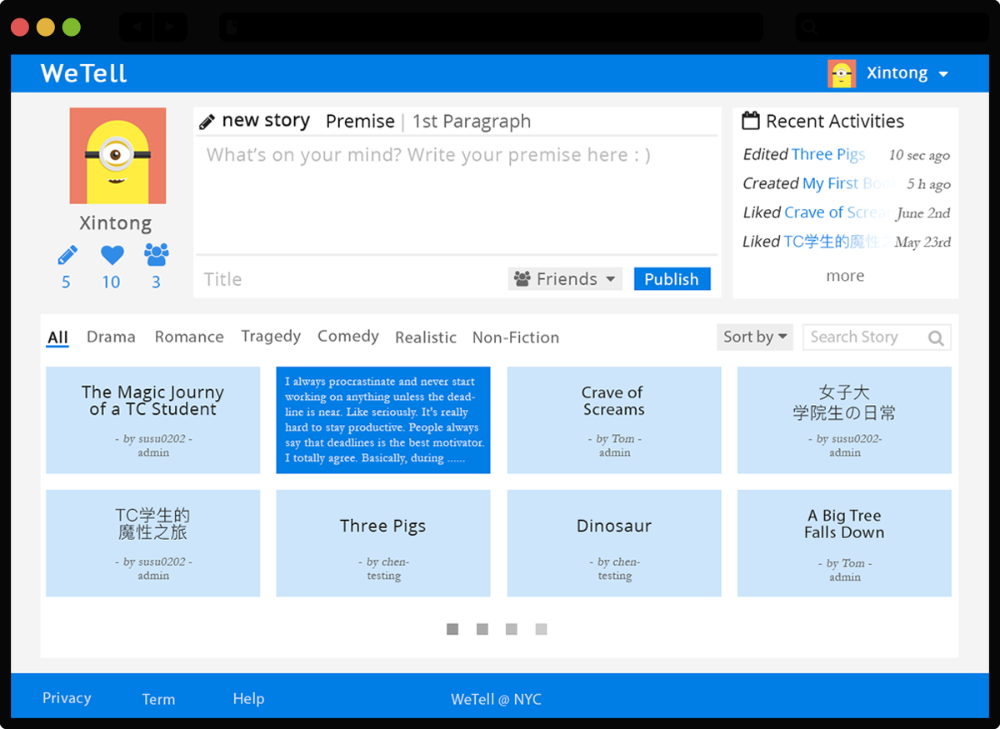
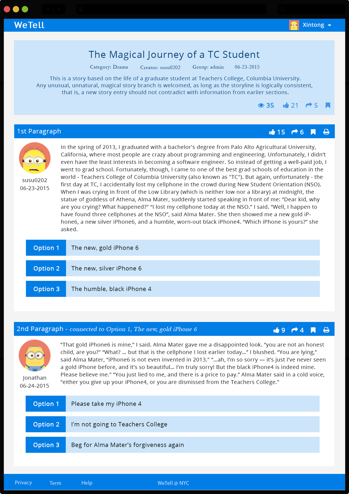

WeStory
A collaborative story-telling community
for college students to improve literacy and writing skills
View Demo
View Demo
A login page will allow users to either create a new account or login using existing credentials. In the login page, there are brief introduction of WeStory, to help new users have an idea of what they can do in WeStory.
The main page motivates users to write down their minds and presents personalized information based on each user's acativities in WeStory. Story page display the title, premise and first paragraphy of the story selected by the user.
Users could choose their own story flow based on their own preferences. The social networking icons serve to motivate users to get more engaged in WeStory and write/share stories actively.
My Contributions
Cooperative project: Learning Experience Design, UI Design, Front-End Development, Back-End Development (Parse)
Technologies
HTML, CSS, JavaScript, Parse, Photoshop
Problem
Students generally do not enjoy formal practices of writing, especially when they write alone or write on given topics that hinder their creativity. Therefore, writing stories based on students' own interests collaboratively is a good learning acativity. But, this is difficult for teachers, because it is challenging to manage collaborative writing tasks of 30+ students, not to mention 30+ different topics.
Solution
To design an online collaborative storytelling platform, which allows many students to do collaborative writing while offering flexible ways for students to contribute creativity within a single story.